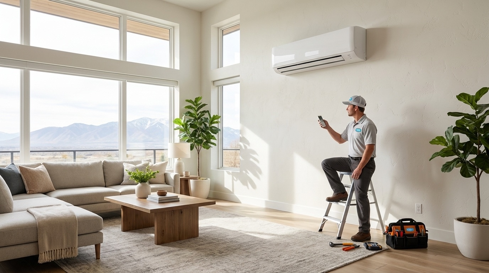
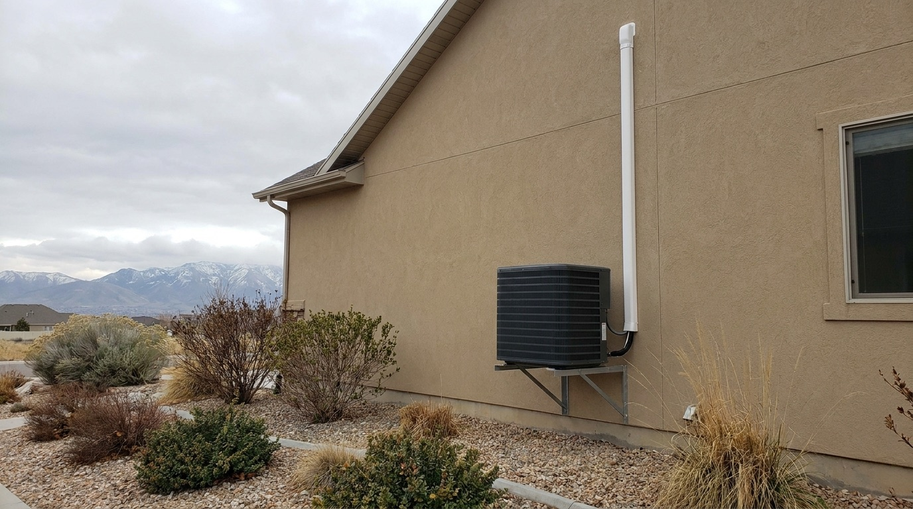
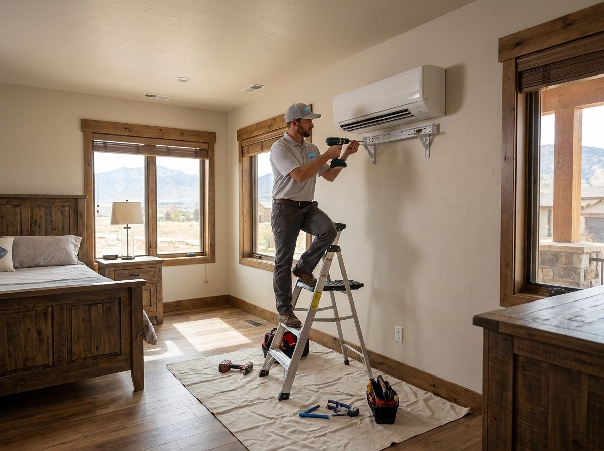
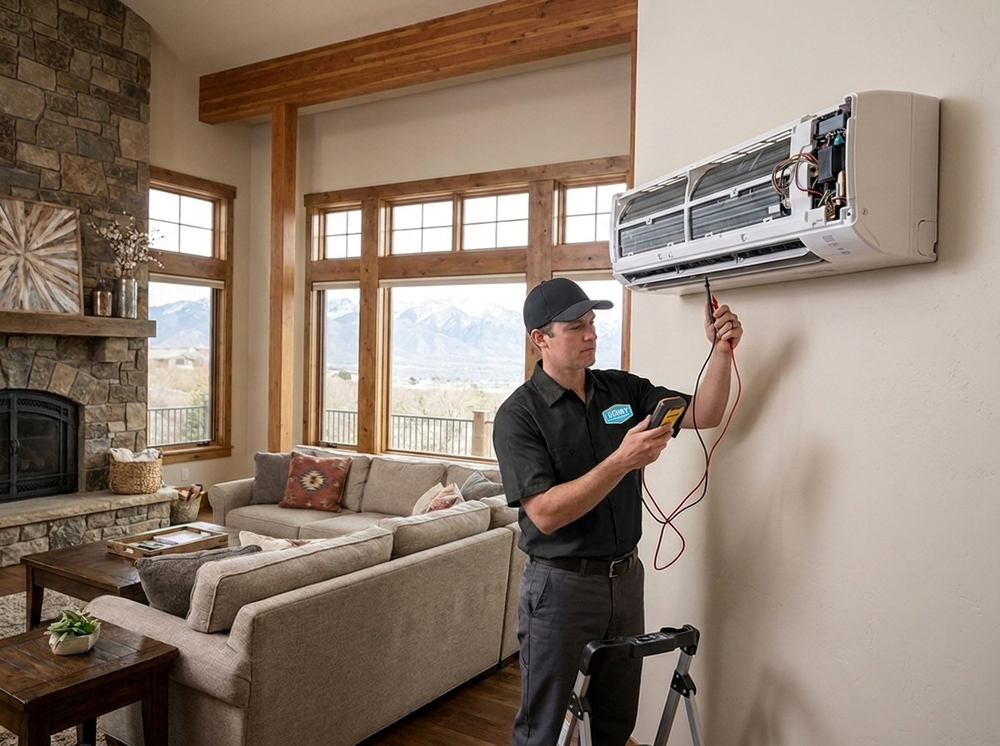
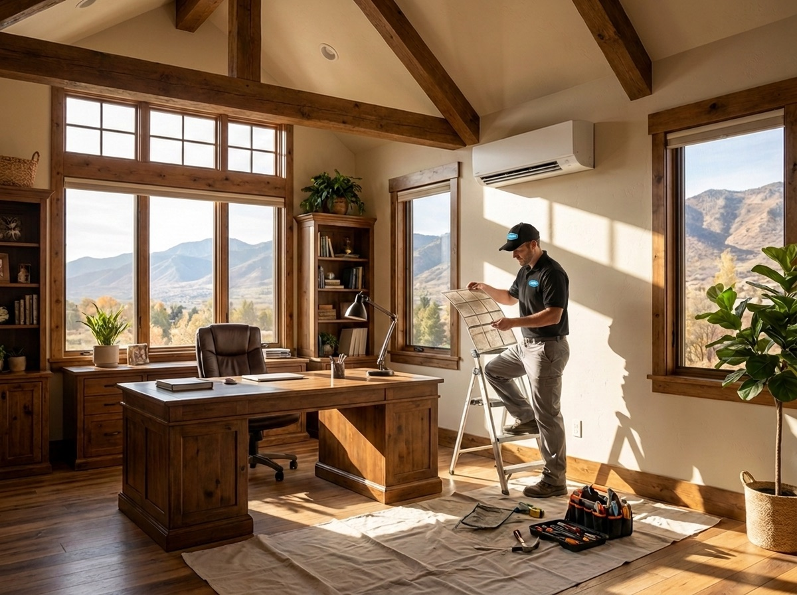

385.853.8116


With triple-digit July afternoons and single-digit January mornings, life in Utah requires an HVAC system that can handle the swing of the Wasatch Front’s climate. At Sunny Home Services, we’re here to handle all your ductless mini split AC installation, maintenance, and repair needs.
Ductless mini splits are one of the smartest ways to stay comfortable year-round in the Salt Lake Valley, offering efficient heating and cooling without the hassle of adding ductwork. Our certified local technicians are here to help find the right-sized system for your space, install it for peak efficiency, and keep it running smoothly for years to come.

Ductless mini splits are heating and cooling systems that deliver conditioned air straight into a room without the use of ducts. They feature an outdoor compressor unit and an indoor air handler mounted on a wall or ceiling, connected by a small line that runs through your wall.
Many Wasatch Front homes are equipped with multiple indoor units to provide zoned control for room-by-room comfort and better efficiency. Each indoor unit cools and heats the space it serves, while letting you set the temperature independently in each zone.
Mini splits differ from central ACs in their setup and operation. Central ACs push conditioned air through a network of ducts, making them ideal for homes with existing ductwork. Ductless mini splits skip the ducts entirely, which means fewer installation requirements and less wasted energy for homes without existing ductwork or those that want targeted heating and cooling.


At Sunny Home Services, we offer a full range of mini split services to keep your system running smoothly from installation to routine upkeep. We help you find and install the right unit for your home, repair it when something goes wrong, and keep it running efficiently with seasonal maintenance. Every job is documented with photos and explained in plain language, so you’re always in the know about what’s happening in your home.

Our certified technicians handle ductless mini split installation from start to finish. We size the system for your space, position the indoor and outdoor units for optimal performance, and make sure everything is sealed and charged correctly. Whether you’re installing a single zone or setting up a multi-zone system, you can trust that we’ll get it right the first time.
Learn More ›
When your mini split stops blowing air, struggles to keep up, or won’t turn on, we’re on call and ready to help with expert repairs. We’ll diagnose your system to identify the issue, walk you through your options, and provide solutions built to last. With same-day service for no-heat and no-cool situations, we can get your comfort back on track within hours.
Learn More ›
Routine maintenance keeps your mini split running efficiently through the Wasatch Front’s hottest summers and coldest winters. Our technicians perform top-to-bottom checkups, cleaning the filters and coils, checking refrigerant levels, inspecting connections, and ensuring each zone is performing as it should. With seasonal tune-ups, your system is ready for whatever the Utah weather throws at it.
Learn More ›Considering the Wasatch Front ductless mini split installation? These energy-efficient systems are a popular choice for Wasatch Front homeowners searching for:
A ductless mini split is often the right choice when you’re finishing a basement, converting a garage, or building an addition that your central system can’t reach. It’s also a great fit if you have a room that’s always too hot or too cold, or if you live in an older Wasatch Front home without existing ductwork.
Our mini split services don’t just stop once the installation is complete. We keep your unit running reliably for years to come with expert repairs and professional maintenance.
If your system is making strange noises, leaking water, or won’t turn on at all, call our team for professional diagnosis. We’ll catch small issues before they turn into costly repairs and get your system ready for the next the Wasatch Front cold snap or heat wave.
Wasatch Front homeowners shouldn’t have to choose between big out-of-state chains that treat your home like a ticket number and small shops that can’t always show up fast or communicate clearly. At Sunny Home Services, we give you the best of both. You get the speed and polish of a big company with the honesty and accountability of a local one.
Wasatch Front homeowners choose our team because we offer:
We service all makes and models of mini splits for homes throughout the Wasatch Front. Whether you have a Mitsubishi, Daikin, Fujitsu, LG, or another major brand, our technicians are trained to install, repair, and maintain your system.
A new mini split system can be a major investment, which is why we offer flexible financing options that help make upgrading more manageable. We’ll explain our flat-rate pricing, walk you through the available plans, and help you choose the option that works best for your budget.

Ready for efficient, room-by-room comfort all year long? Whether you need a new mini split installation, a quick repair, or seasonal maintenance, Sunny Home Services is here to help. Contact us today to schedule your service and get upfront, flat-rate pricing from a local team you can trust.